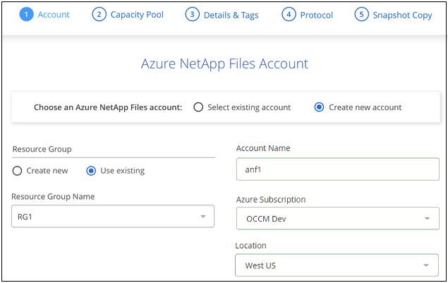
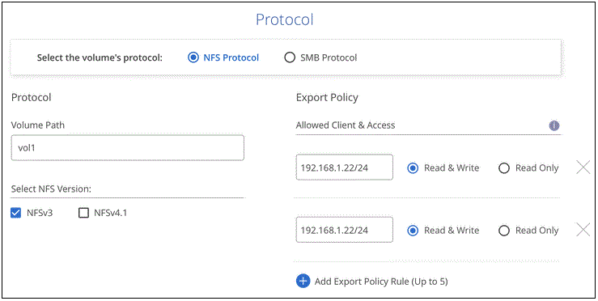
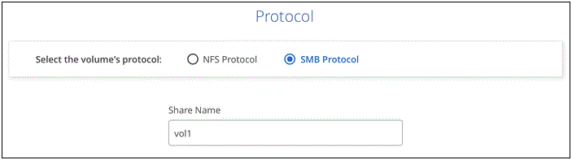
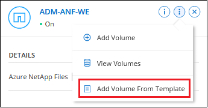
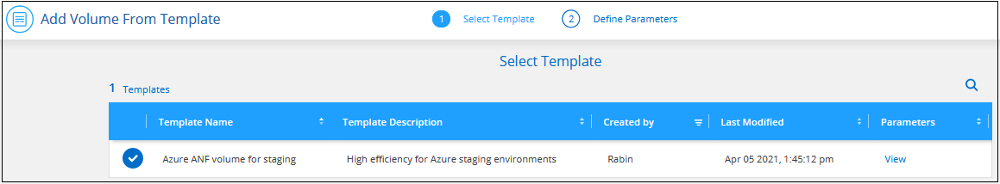
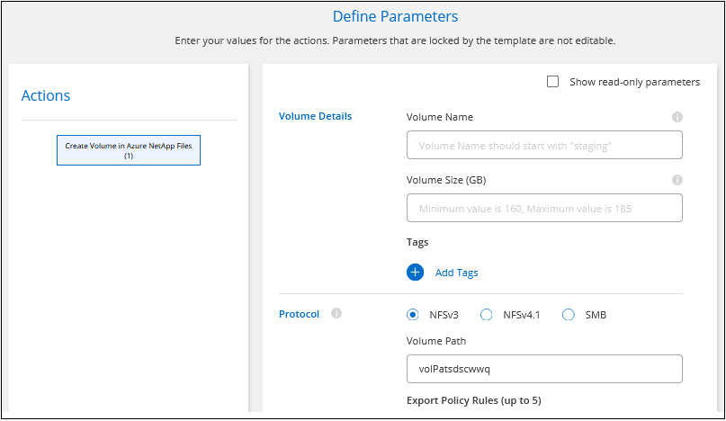
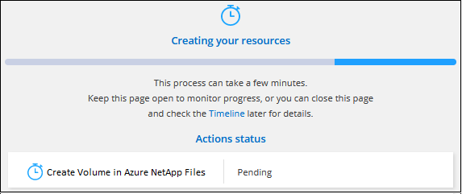
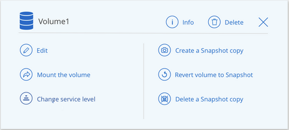

Solicitar cambios en el documento
Solicitar cambios en el documento Editar en GitHub
Editar en GitHub Guía del colaborador
Guía del colaboradorCree y monte volúmenes para Azure NetApp Files
Colaboradores
Después de configurar el entorno de trabajo, puede crear cuentas de Azure NetApp Files, pools de capacidad y volúmenes.
Cree volúmenes
Es posible crear volúmenes de NFS o SMB en una cuenta de Azure NetApp Files nueva o existente.
Una función de BlueXP denominada "plantillas" permite crear volúmenes optimizados para los requisitos de carga de trabajo de determinadas aplicaciones, como bases de datos o servicios de streaming. Si su organización ha creado plantillas de volumen que debe utilizar, siga estos pasos.
-
Si desea utilizar SMB, debe haber configurado DNS y Active Directory.
-
Cuando planee crear un volumen SMB, debe tener un servidor de Windows Active Directory disponible para el que se pueda conectar. Deberá introducir esta información al crear el volumen.
-
Abra el entorno de trabajo de Azure NetApp Files.
-
Haga clic en Añadir nuevo volumen.
-
Proporcione la información necesaria en cada página:
-
cuenta de Azure NetApp Files: Elija una cuenta de Azure NetApp Files existente o cree una nueva cuenta. Al crear una cuenta nueva, también puede elegir el grupo de recursos que desea utilizar.

-
capacidad Pool: Seleccione un pool de capacidad existente o cree un nuevo pool de capacidad.
Si crea un pool de capacidad nuevo, debe especificar un tamaño y seleccionar un "nivel de servicio".
El tamaño mínimo del pool de capacidad es de 4 TB. Es posible especificar un tamaño en múltiplos de 4 TB.
-
Detalles y etiquetas: Introduzca un nombre y un tamaño de volumen, el vnet y la subred donde debería residir el volumen y, opcionalmente, especifique etiquetas para el volumen.
-
Protocolo: Elija el protocolo NFS o SMB e introduzca la información necesaria.
A continuación encontrará un ejemplo de detalles de NFS.

A continuación encontrará un ejemplo de detalles de SMB. Deberá proporcionar información de Active Directory en la siguiente página al configurar el primer volumen de SMB.

-
-
Si desea que este volumen se cree según una copia de Snapshot de un volumen existente, seleccione la copia de Snapshot en la lista desplegable Snapshot Name.
-
Haga clic en Añadir volumen.
El nuevo volumen se agrega al entorno de trabajo.
Continúe con montaje del volumen de cloud.
Crear volúmenes a partir de plantillas
Si su organización ha creado plantillas de volúmenes de Azure NetApp Files para poder implementar volúmenes optimizados para los requisitos de cargas de trabajo de determinadas aplicaciones, siga los pasos de esta sección.
La plantilla debería facilitar el trabajo porque ciertos parámetros de volumen ya se definirán en la plantilla, como el pool de capacidad, el tamaño, el protocolo, el vnet y la subred donde debería residir el volumen, entre otros. Cuando ya hay un parámetro predefinido, puede saltar al siguiente parámetro de volumen.
-
En la página lienzo, haga clic en el entorno de trabajo Azure NetApp Files en el que desea aprovisionar un volumen.
-
Haga clic en
 > Añadir volumen de plantilla.
> Añadir volumen de plantilla.
-
En la página Select Template, seleccione la plantilla que desea utilizar para crear el volumen y haga clic en Siguiente.

Aparece la página define Parameters.

Nota: puede hacer clic en la casilla de verificación Mostrar parámetros de sólo lectura para mostrar todos los campos bloqueados por la plantilla si desea ver los valores de esos parámetros. De forma predeterminada, estos campos predefinidos están ocultos y sólo se muestran los campos que debe completar.
-
Agregue valores para todos los parámetros que no estén codificados de forma rígida desde la plantilla. Consulte crear volúmenes Para obtener detalles sobre todos los parámetros que se necesitan completar en la implementación de un volumen de Azure NetApp Files.
-
Haga clic en Ejecutar plantilla después de definir todos los parámetros necesarios para este volumen.
BlueXP aprovisiona el volumen y muestra una página para que pueda ver el progreso.

A continuación, se añade el nuevo volumen al entorno de trabajo.
Continúe con el montaje del volumen de cloud.
Monte los volúmenes
Acceda a las instrucciones de montaje desde BlueXP para que pueda montar el volumen en un host.
-
Abra el entorno de trabajo.
-
Pase el ratón sobre el volumen y seleccione montar el volumen.

-
Siga las instrucciones para montar el volumen.